The following package(s) will be installed:
- tidyverse [2.0.0]
These packages will be installed into "~/Desktop/SOCS0100/renv/library/R-4.3/aarch64-apple-darwin20".
# Installing packages --------------------------------------------------------
- Installing tidyverse ... OK [linked from cache]
Successfully installed 1 package in 3.6 milliseconds.🗓️ Week 01
A Gentle Introduction to R
SOCS0100 – Computational Tools for Reproducible Social Science
01 Oct 2023
What is R?
R is a widely known open-source software environment for statistical computing and graphics. Download: https://cran.r-project.org/ for both Windows and (Mac) OS X
R is more than statistical software; it is essentially a programming language based on statistical programming language S (1976)
Developed by Ross Ihaka & Robert Gentleman (1995)
R may be a little bit challenging at the beginning because R demands precision, and carrying out simple tasks may seem to require a lot of effort
Once you get acquainted with R, however, you can handle both basic and complex tasks with ease
Let’s get started with R Studio

- We are going to use R Studio in this workshop. R Studio is free software that runs R in the background with some brilliant features
- It is an integrated development environment (IDE) for R. It includes a console, syntax-highlighting editor that supports direct code execution, as well as tools for plotting, history, debugging and workspace management
- Go to https://www.rstudio.com/products/rstudio/download/
- Select “RSTUDIO-2023.06.2-561.EXE - Windows 10/11 (64-bit)” for Windows users
- Select “RSTUDIO-2023.06.2-561.DMG - macOS 11+ (64-bit)” for Mac users
The RStudio interface
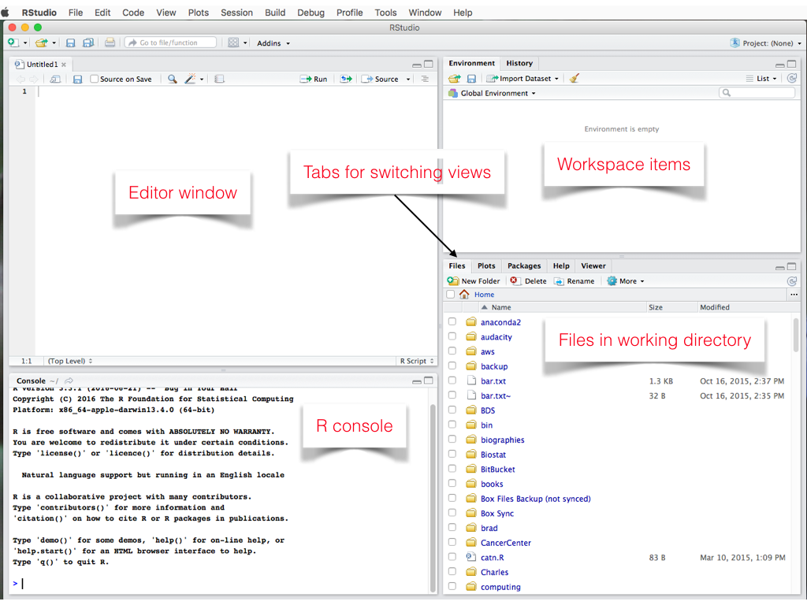
Working with R Script Files
- Rather than typing R commands into the console, we typically write short programs, known as “R scripts” that contain the R commands that we wish to execute
- A file editor tab will open in the source panel. R code can be entered here
- You can use File, then Save to give your script a name and save it in your working directory.
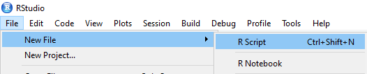
Running R code
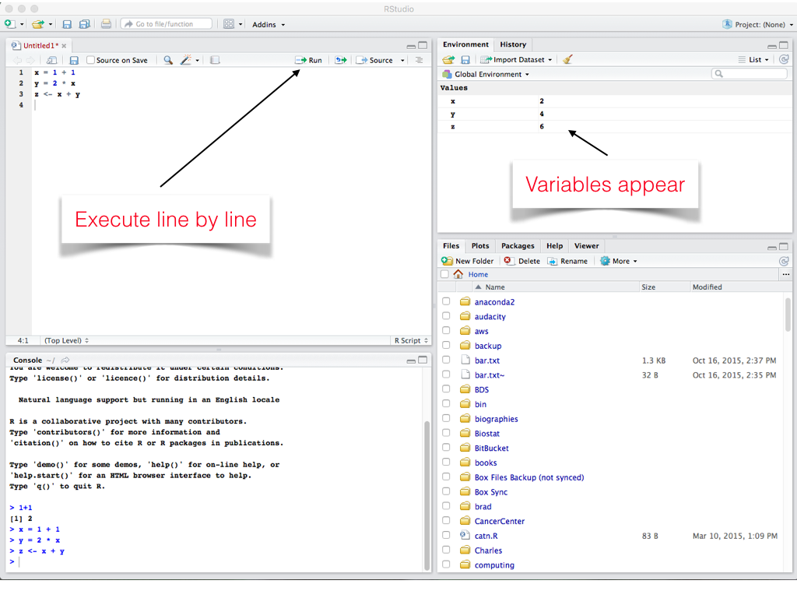
- When running multiple lines: select all lines, then press ‘Run’ or cmd/ctrl+enter
R Markdown/Quarto
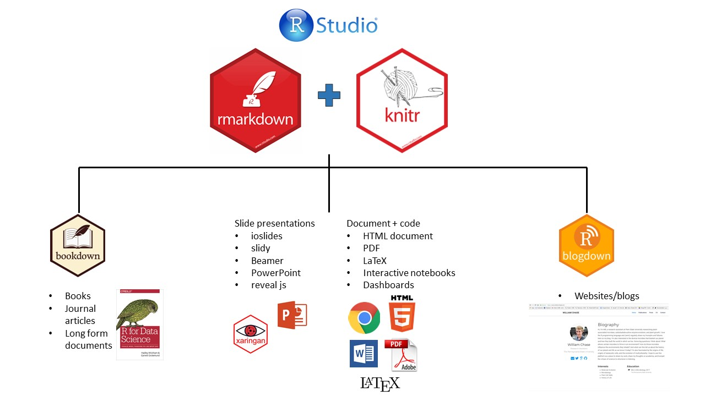
R Markdown/Quarto produces dynamic output formats in html, pdf, MS Word, dashboards, Beamer presentations, etc.
We will be learning how to effectively use Quarto for reproducible documents in week 5
Base R vs R packages
- There are “default” packages that come with R. Some of these include:
- mean(), median(), max(), min(), and sd()
- ls() to see what we have in the environment
- setwd() to set your working directory
- print() to display the “things” on the console

- And there are R packages developed and shared by others. Some R packages include:
- foreign
- ggplot2
- tidyverse
Installing and loading R packages
- You only need to install a package once on your computer. To install an R package use install.package() function.
install.packages(“tidyverse”)
- However, you need to load a package everytime you plan to use it. To load a package use the library() function.
It’s easy to ask for HELP
- You can either use help() function to access R help files or use help section in the bottom right pane to search
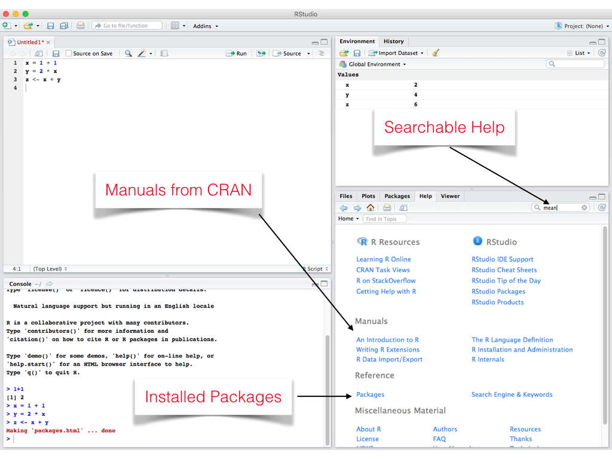
Learning outcomes in this online workshop
Able to:
- Read and write lines of R code (even if you do not understand all functions, you know how to look them up)
- Understand what ‘tidy’ data is, how to generate it, and work with it
- Open, read, manipulate, analyse, visualise, and save a dataset, using some packages
- Use RStudio, and use it to write an R script and an R markdown document
R basics
- R as a calculator
[1] 5[1] 7[1] 30Assignment
Assignment means creating a variable or more generally, an “object” and assigning values to it
<-is the assignment operatorgood practice to put a space before and after assignment operator!
[1] 10[1] "SOCS0100"[1] "Next slide please"- The console has displayed “Next slide please”. This is in quotation, which tells R that we are entering a text (string)
Objects
- Most statistical software, such as Stata, operates on datasets including rows of observations and columns of variables
- However, R is an “object-oriented” programming language like Python and JavaScript
- You can consider objects as anything you can assign values to (e.g. data, functions)
- Remember, you can also check what objects you have got in the environment by calling the ls() function
Objects
- Objects can be categorised by “type” and by “class”
- For instance, a date is an object with a numeric type and a date class
- There is no limit to the number of objects R can hold (except RAM memory)
Logicals
- A logical is
TrueorFalse, and can also be written asTorF. Logicals are mostly used as follows:
== |
is equal to |
!= |
is not |
>= |
larger than or equal to |
< |
smaller than |
[1] TRUE[1] TRUE[1] TRUE[1] FALSEVectors
- A vector is a collection of values
- The individual values within a vector are called “elements”
- Values in a vector can be numeric, character (e.g., “SOCS0100”), or some other type
- For instance, you can use the combine function c() to create a numeric vector that contains elements (e.g. your modules at UCL and your grades)
[1] "S0CS0100" "SOCS0079" "SOCS0081"[1] 60 63 65Practicals (~5 min)
- Using either the R console or the R script file, please do the following exercises:
- Create a vector called v1 with three elements, where all the elements are numbers. Then print the values.
- Create a vector called v2 with four elements, where all the elements are characters. Then print the values.
- Create a vector called v3 with five elements, where some elements are numeric and some elements are characters. Then print the values.
Solutions
[1] 50 100 150[1] "s" "o" "c" "i"[1] "s" "o" "4" "9" "1"1
Basic data structures
- There are two broad types of vectors (Grolemund & Wickham, 2016):
- Atomic vectors: They are objects that contain elements. They are homogeneous. In other words, all elements within atomic vector must be of the same type. There are six types of atomic vectors: logical, integer, double, character, complex, and raw.
- Lists: They are also objects that contain elements. Lists can be heterogeneous though. For example, one element can be an integer and another element can be character.
- These two concepts are not quite intuitive, but they will settle down after a while.
Length of an vector is the number of elements
- You can use
length()function to examine vector length
[1] 10 14 18[1] 3[1] "Lennon" "McCartney" "Harrison" "Starr" [1] 4It’s straightforward to identify type of a vector
- You can use
typeof()function to examine vector type
[1] 10 14 18[1] "double"[1] 0.5 1.5[1] "double"[1] "Lennon" "McCartney" "Harrison" "Starr" [1] "character"Sequences
- A sequence is a set of numbers in ascending or descending order (e.g., 1, 2, 3)
- It can be created using the colon operator
:with the notationstart:end - You can use
seq()function to create a series of numbers and assign it to an object.
[1] 5 6 7 8 9 10[1] 6[1] 10 11 12 13 14 15[1] 10 11 12 13 14 15[1] 100 110 120 130 140 150Vectors can be used in mathematical operations
[1] 3 4 5 6 7 8 9 10[1] 6.5[1] 6 8 10 12 14 16 18 20[1] 3 1 3[1] 1 0 6Understanding structure of lists using str() function
[1] "list"[1] 3List of 3
$ : num 1
$ : num 2
$ : num 3- Remember that each element of a list can be a vector of different length
List of 2
$ : num [1:2] 1 2
$ : num [1:3] -1 0 5Data types can differ across elements within a list
[1] "list"[1] 4List of 4
$ : num 5
$ : num 6
$ : chr "beatles"
$ : logi TRUELists can contain other lists
List of 3
$ : num [1:2] 5 6
$ :List of 2
..$ : chr "beatles"
..$ : chr "radiohead"
$ :List of 3
..$ : num 10
..$ : num 20
..$ : num 30You can also name each element in the list
List of 3
$ a: num [1:2] 5 6
$ b:List of 2
..$ : chr "beatles"
..$ : chr "radiohead"
$ c:List of 2
..$ : num 10
..$ : num 20- You can use
names()function to show names of elements in the list
[1] "a" "b" "c"NULLAccessing individual elements in a list
-You can use the syntax: list_name$element_name
[1] 5 6[1] "double"[1] 2[1] "list"[1] 2Combining the vectors to a unidimensional/multidimensional list with c()
- Let’s say you have two vectors:
candidateandage
[1] 67.25[1] "Biden" "Harris" "Trump" "Pence" "78" "56" "74" "61" [[1]]
[1] "Biden" "Harris" "Trump" "Pence"
[[2]]
[1] 78 56 74 61Combine the vectors to a twodimensional data frame, with data.frame()
candidate age
1 Biden 78
2 Harris 56
3 Trump 74
4 Pence 61 candidate age
Length:4 Min. :56.00
Class :character 1st Qu.:59.75
Mode :character Median :67.50
Mean :67.25
3rd Qu.:75.00
Max. :78.00 Factors – a special type of vector, defined by levels
[1] "Male" "Female" "Male" "Male" [1] Male Female Male Male
Levels: Female Male candidate age sex
1 Biden 78 Male
2 Harris 56 Female
3 Trump 74 Male
4 Pence 61 MaleDataframes in R (main takeaways)
- Data in R are held in objects of different types, dimensions and classes
- A data frame is just a list
- Each element in data frame must be a vector, not a list
- Each element (column) is a variable
- The length of an element is the number of observations (rows)
- Each element is also named
- You may have several different datasets with various types and shapes contained in the R environment
R built-in datasets
- You can use the
View()function to display the data frame like a spreadsheet - Please type this on the R Console
View(longley) - Remember that you can access individual columns of a data frame by using the dollar sign
$
[1] 1947 1948 1949 1950 1951 1952 1953 1954 1955 1956 1957 1958 1959 1960 1961
[16] 1962 [1] 107.608 108.632 109.773 110.929 112.075 113.270 115.094 116.219 117.388
[10] 118.734 120.445 121.950 123.366 125.368 127.852 130.081Accessing certain observations (rows) and/or certain columns (variables)
- You can use square brackets to subset data frames, in which the row coordinate goes first and the column coordinate second.
GNP.deflator GNP Unemployed Armed.Forces Population Year Employed
1951 96.2 328.975 209.9 309.9 112.075 1951 63.221 [1] 1947 1948 1949 1950 1951 1952 1953 1954 1955 1956 1957 1958 1959 1960 1961
[16] 1962 GNP.deflator GNP Unemployed Armed.Forces Population Year Employed
1947 83.0 234.289 235.6 159.0 107.608 1947 60.323
1948 88.5 259.426 232.5 145.6 108.632 1948 61.122 Population Year
1947 107.608 1947
1948 108.632 1948Missing data
- Let’s add a column (variable) to our data:
[1] Yes Yes No <NA>
Levels: No Yesna.rmargument asks whether to remove NA values prior to calculation- For most functions, default value is
na.rm = FALSE - If you specify, na.rm = TRUE , NA values removed prior to calculation
[1] NA[1] 6Missing data
- You must realise that
NAis not a level! - NA is a special keyword, not the same as the character string “NA”
candidate age sex tax_return
1 Biden 78 Male Yes
2 Harris 56 Female Yes
3 Trump 74 Male No
4 Pence 61 Male <NA>- You can use
is.na()function to determine if a value is missing
candidate age sex tax_return
[1,] FALSE FALSE FALSE FALSE
[2,] FALSE FALSE FALSE FALSE
[3,] FALSE FALSE FALSE FALSE
[4,] FALSE FALSE FALSE TRUEProgramming: if statements
- A test/condition is this statement true or false?
- If the statement A is true, then do B; if false, then do C (optional)
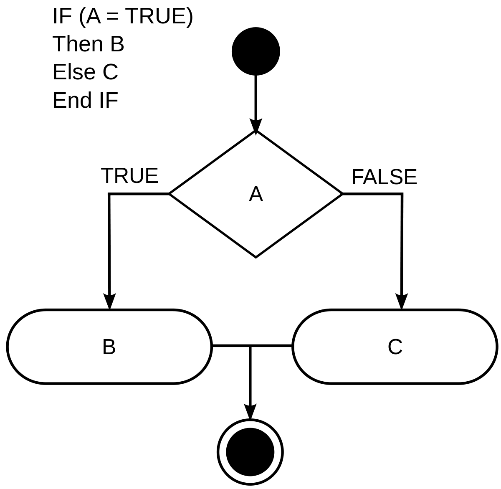
Conditionals
- You can use
if(){}else{} function
[1] "Bingo"Programming: functions
- We previously use some predefined functions (e.g.
mean(),sum(),length()) - We can customize functions to serve our special needs
- Functions contain multiple instructions that create a cohesive unit:
Programming: functions
- Let’s remember our created dataset
- Arguments, sometimes referred to as parameters, are special variables that are passed into functions, so that they can be used to perform some tasks
candidate age sex tax_return
1 Biden 78 Male Yes
2 Harris 56 Female Yes
3 Trump 74 Male No
4 Pence 61 Male <NA>[1] 78Programming: loops
- Instructions needs to be applied multiple times
- Input is an iterable object (e.g. multiple similar elements)
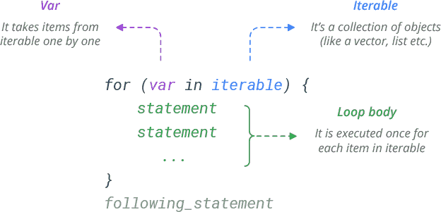
Programming: loops
[1] "The course will" "finish" "in" "1"
[5] "minutes"
[1] "The course will" "finish" "in" "2"
[5] "minutes"
[1] "The course will" "finish" "in" "3"
[5] "minutes"
[1] "The course will" "finish" "in" "4"
[5] "minutes"
[1] "The course will" "finish" "in" "5"
[5] "minutes" Importing data
- Data come in many different file formats such as .csv, .tab, .dta, .sav, etc. Today we will load a dataset which is stored in R’s native file format: .RData
- rm() function in R is used to delete objects from the memory
- Setting the working directory
- Importing data
Importing data
- Inspecting the names of the variables and the dimensions of the dataset (dimension 1 = rows, dimension 2 = columns)
[1] "id" "year" "wtssall" "vpsu" "vstrat" "polviews"
[7] "born" "adults" "hompop" "race" "region" "age"
[13] "sex" "one" "gunlaw" "cappun" "grass" "eqwlth"
[19] "marital" "wrkstat" "income16" "rincom16" "trust" "socommun"
[25] "socrel" "socfrend" "relig" "friend" "degree" "pres12"
[31] "natsci" "confinan" "conbus" "conclerg" "coneduc" "conpress"
[37] "contv" "conjudge" "consci" "conlegis" "conarmy" "spenviro"
[43] "sphlth" "sppolice" "spschool" "sparms" "sparts" [1] 2867 47Subsetting Data Frames with [] and $
- Show all obs where respondents’ sex is male (1) (1276) and all columns (variables)
[1] 1276 47- Show all obs where respondents’ sex is female (2) (1591) and the first three columns (first 3 variables)
- Show all obs where respondents’ sex is “female” (2) and race is “black” (2) (283)
[1] 1591 3[1] 283 47Subsetting with Base R function
- The
subset()is a base R function and easiest way to “filter” observations, which can be combined withselect()another base R function to select variables
[1] "confinan" "conbus" "conclerg" "coneduc" "conpress" "contv" "conjudge"
[8] "consci" Introducing tidyverse
- Tidyverse has become the most popular way of cleaning and manipulating data in R
- Tidyverse commands can be more efficient with less lines of code
| tidyverse | base R | operation |
|---|---|---|
select() |
[ ]+ c() OR subset() |
“extract” variables |
filter() |
[ ]+ $ OR subset() |
“extract” observations |
- You can also use %in% operator to further filter
Rename variables
rename()function renames variables within a data frame object
Creating new variables and renaming with mutate() and %>%
age ethnicity sex age_2
59600 47 1 1 2209
59601 61 1 1 3721
59602 72 1 1 5184Simple plots
```{r} #| label = "rhist", #| fig.align = "centre", #| out.width = "70%" hist(gss$age)
Simple plots
```{r} #| label = "rgrp", #| fig.align = "centre", #| out.width = "70%" plot(longley$Year, longley$GNP, type="l")
Introducing ggplot2
ggplot2is to focus on data visualisation as part of the tidyverseggplot2visualises the data in a tidy dataframe. Thus, ggplot expects the input data to be in a dataframe- There are four main parts of a basic ggplot2 visualisation: the
ggplot()function, the data parameter, theaes()function, and the geom
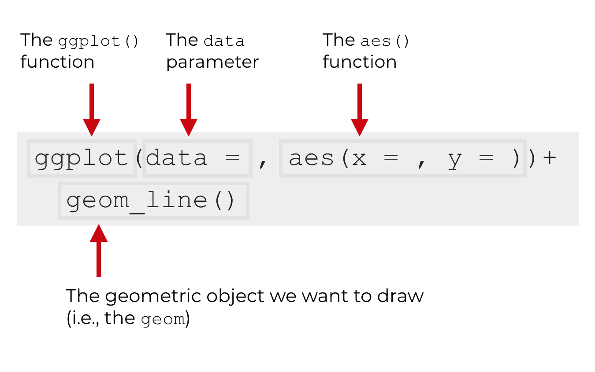
Introducing ggplot2
- You begin every plot by telling the
ggplot()function what your data is - When you provide an argument to the data parameter, it will always be a data.frame object of some type
- You will define how the variables in this data logically map onto the plot’s aesthetics. Mappings are specified using the aes() function
- You can combine the argument that define the type of plot you want, which is called a geom. Each geom has a function that creates it
- For example,
geom_point()makes scatterplots,geom_bar()makes barplots,geom_boxplot()makes boxplots
Plotting with ggplot2
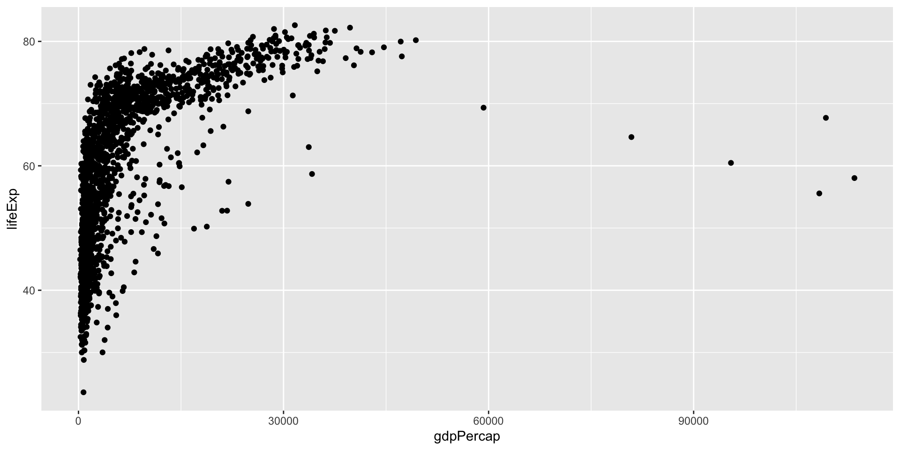
Plotting with ggplot2
- You can build your plots layer by layer
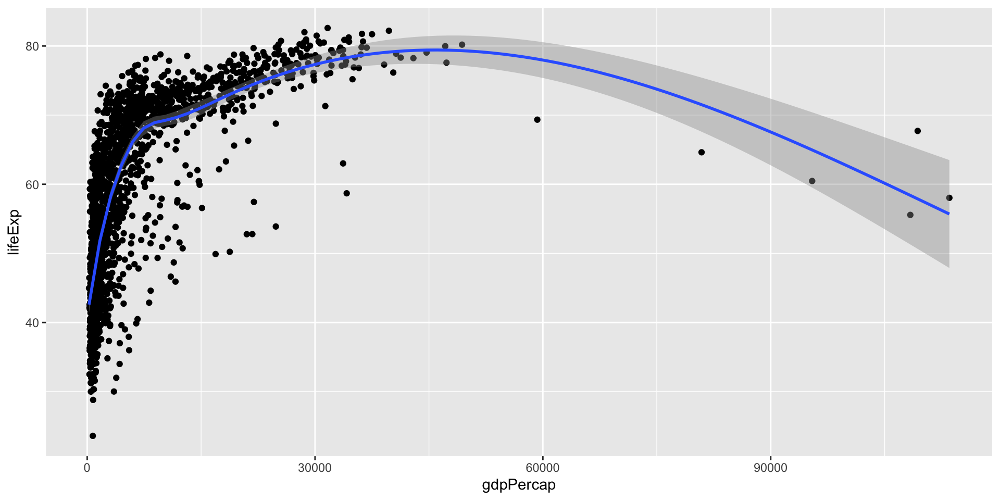
Plotting with ggplot2
- Gross Domestic Product per capita is not normally distributed across the country years. The x-axis scale would probably look better if it were transformed from a linear scale to a log scale
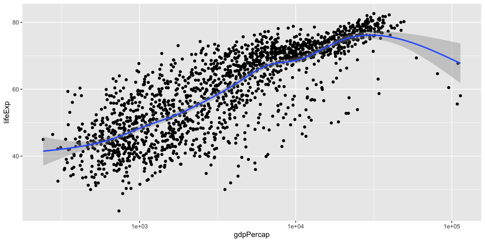
Plotting with ggplot2
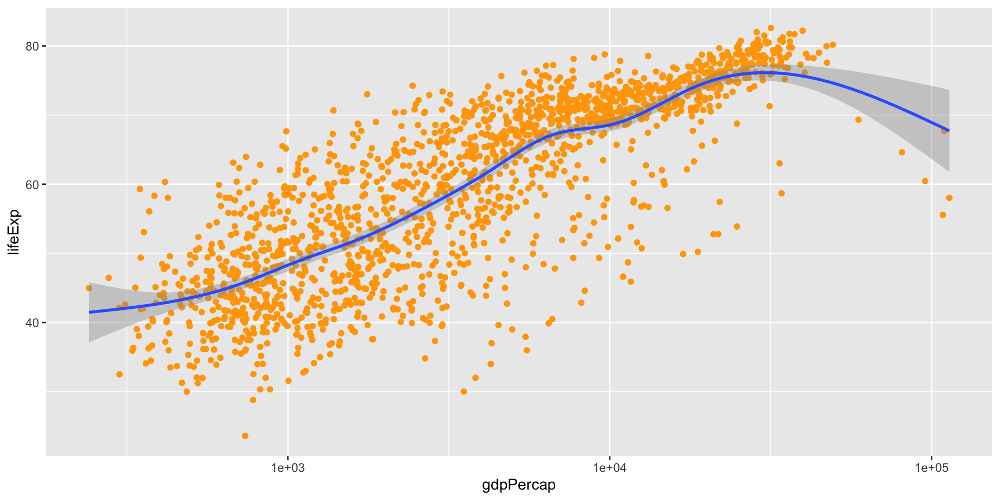
Open sources for R
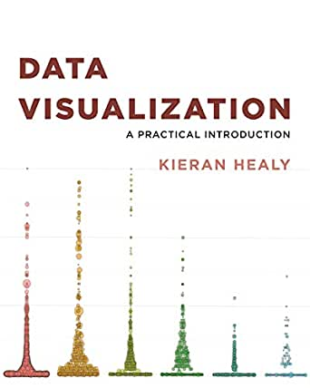
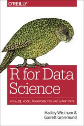
- https://community.rstudio.com/
- https://socviz.co/ (DataViz)
- https://r4ds.had.co.nz/ (R for Data Science)